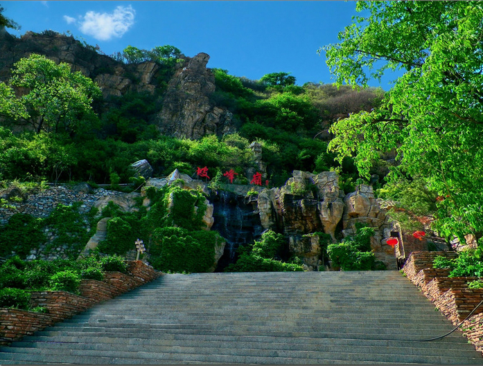

京西幽岚山风光篇
发布人：幽岚山官方
发布时间：2016-06-06>

登上坡峰岭，足见山势连绵，群峰叠翠，向西远眺上房山国家森林公园，往东俯瞰龙骨山北京人遗址，北接燕山余脉，南连广袤平原，心游万仞，精骛八极，房山之秀，尽收眼底。
绿野碧波，霞光白云之中，侧耳聆听，山脚古刹“药师寺”禅乐优雅，林涛阵阵，溪水潺潺，清净之地，倍感悠然。
在鬼斧神工般的好汉岩极目远方，大有抬头可触天。伸手可摘星的圣觉。
景区拥有京都地区最富戏剧性的自然景观、山林、山村民俗特点、烹饪文化，这种原始文化的形成和保存，任何一个地区都无可取代。为了得到和享受这份自然的恩赐，人们一直在寻找，直到来到坡峰岭。 坡起处多以柿树、核桃、桃树、山杏、杨树分布，伴生野酸枣、野山梨、野山菊等。半坡拾阶而上，蜿蜒小路两侧以自然生高大黄栌为众多，伴生麻榆、麻全子、酸枣、山荆等。高坡处又以高大黄栌、栾树、杨树密集分布，密而不见天日，为小憩休闲放松之胜地。其中，红叶有黄栌、元宝枫、火炬等七八个品种、数万株。纵览坡峰岭景区，是春季踏青观花、夏季避暑乘凉、秋季赏漫山红叶，冬季观瑞雪奇景的佳选。